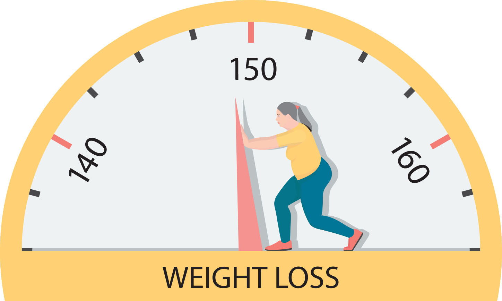
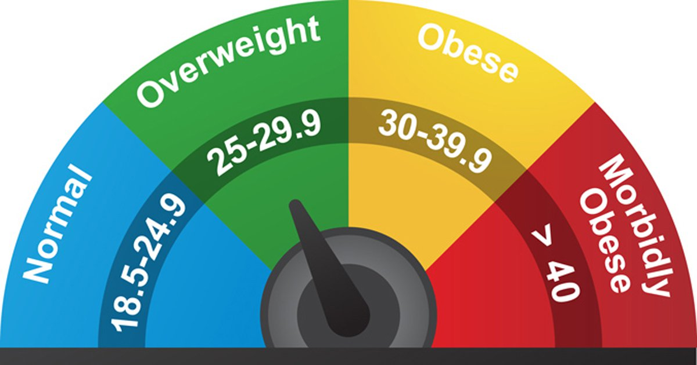
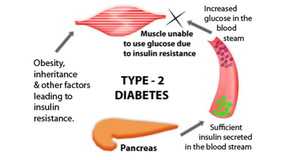
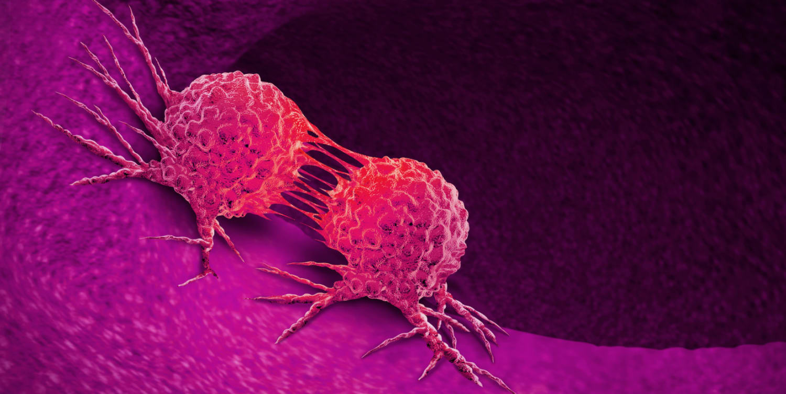
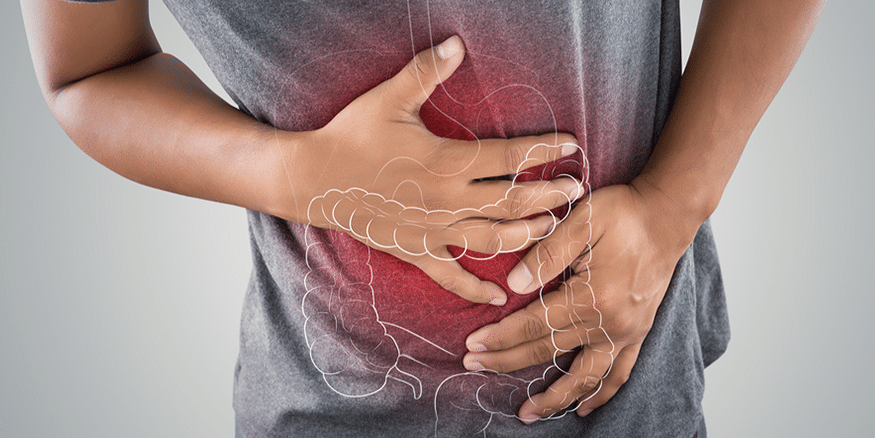
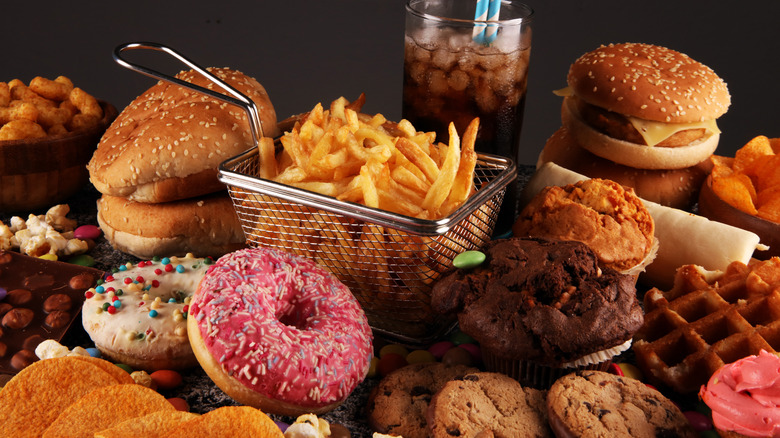
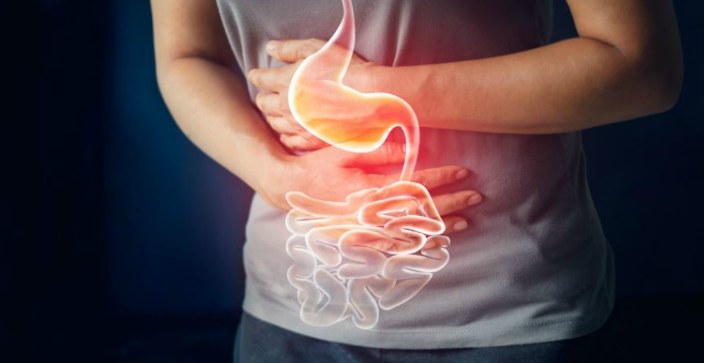
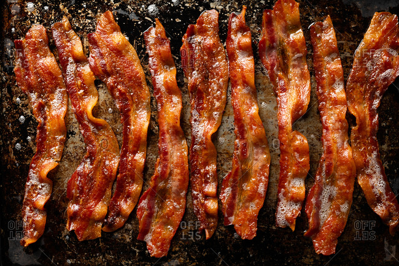
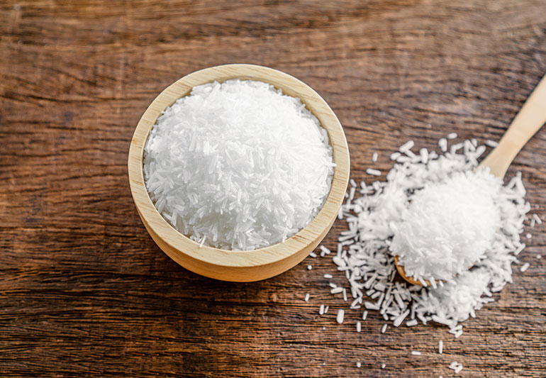

Diet
Diet Exercise
Exercise Anti-ovedose
Anti-ovedose
A diet includes all the food and drinks that we ( human beings) usually have, eat or consume everyday in our daily lives. It can be the usual meals, foods, drinks, and snacks that we usually eat in a day whether it’s healthy or not.
Unlike a diet, in a nutritious diet, it emphasizes and eats more fruits, vegetables, whole grains, and fat-free or low-fat milk and milk products. In another way, it includes a variety of protein foods such as seafood, lean meats and poultry, eggs, legumes (beans and peas), soy products, nuts, and seeds. To be more nutritious, there should be less low in added sugars, sodium, saturated fats, trans fats, and cholesterol.

Nutrition is a critical part of health and development. Better nutrition is related to improved infant, child and maternal health, stronger immune systems, safer pregnancy and childbirth, and longevity. Speaking of about it more, it can also
As some of you might know, there are more than 40 different kinds of nutrients in food and they can generally be classified into the following 7 major groups which are
Carbohydrates are a major source of energy for our body, and they come mainly from grains, such as rice and noodles. Besides, fruit, root vegetables, dry beans and dairy products also contain carbohydrates.
Meat, fish, seafood, eggs, dairy products, dry beans and bean products are good sources of protein. Its major functions include building, repairing and maintaining healthy body tissues.
Fats serve as an energy source. It can be found in foods such as meat, fish, seafood, dairy products, nuts, seeds and oils. They prevent heat loss in extreme cold weather and protect organs against shock. They are responsible for making up part of our body cells and transporting fat-soluble vitamins such as vitamin A, D, E and K.
There are many kinds of vitamins from various food groups and they participate in different body metabolism such as maintaining healthy skin and hair, building bones and releasing and utilizing energy from foods. Vitamins can be classified into water-soluble and fat-soluble vitamins.
Minerals are a group of essential nutrients which regulate many body functions such as fluid balance, muscle contraction and transmission of nerve impulses. Some minerals also contribute to body structure and build strong and healthy bones, such as calcium.
Dietary fiber is the indigestible part found in plants. It helps stabilize blood sugar, promote gastrointestinal health and prevent constipation, a condition when stools become difficult to pass. Dietary fiber can be classified into soluble and insoluble fiber.
Water
Water is the most abundant substance in the human body and is also an essential nutrient to maintain our health. The major functions of water include regulation of body temperature, production of body fluids, transportation of nutrients and removal of waste products.
Although each nutrient performs different functions in our body, they all work together and contribute to our good health.
As we all know, by eating a healthy balanced diet or meals, it can help in maintaining our weights. Eating a healthy balanced diet accompanied by regular exercise is essential in maintaining physical and mental health and well-being. Not only are these effective in preventing excess weight gain or in maintaining weight loss, but healthier lifestyles are also associated with improved sleep and mood.
The effect on lack of nutrition or poor nutrition can contribute to stress, tiredness and our capacity to work( low energy), and over time, it can contribute to the risk of developing some illnesses and other health problems such as: being overweight or obese, tooth decay, high blood pressure.

More Energy
A good diet starts with a healthful breakfast. Breakfast refills your energy reserves, which are running low from a lack of food during sleep and helps ward away laziness all day. Oatmeal, an omelet with greens, a fruit smoothie with nut butter or a breakfast burrito are examples of healthful choices.Water is also required for a healthful diet, and staying hydrated boosts your energy. In fact, one of the first signs of dehydration is fatigue. Drink half your weight in ounces daily -- if you weigh 140 pounds, for example, drink 70 ounces every day.
Weight Loss
A good eating plan focuses on fruits, vegetables, whole grains, lean proteins and dairy, and this doesn't leave much room for junk food. Eliminating junk food from your diet, eating more lean foods and including fresh produce with each meal will undoubtedly reduce your daily calorie intake. When you eat just 500 fewer calories per day -- less than the amount in two large doughnuts -- you'll lose about a pound of fat per week, according to Harvard School of Public Health.
Improved Memory

Foods high in saturated fats and cholesterol create plaque that can reduce blood flow to areas of your brain and hamper your memory. Eating a healthful diet that eliminates these foods can keep your memory sharp. Fish with high amounts of omega-3 fatty acids, like salmon or herring, contribute to better vascular health and can improve your memory. Fruits, vegetables, whole grains and olive oil also support the health of your blood vessels. While the improvement is likely to be gradual, you should notice better memory and a clearer mind when following a good eating plan.
Deeper Sleep
Nutrients like lycopene from tomatoes, selenium from fish and vitamin C from berries and vegetables help you achieve more restful sleep. When you improve your sleep, you improve your immune system, ability to learn, metabolic function and energy levels. These are more byproducts of a healthful diet than direct benefits, but they're still short-term improvements as a result of making good food choices.
Better Mood
A healthful diet with regular meals can improve your mood and reduce stress by providing nutrients that help balance brain chemistry. This combats crankiness, depression and difficulty sleeping. Foods like salmon, mushrooms, dates and cherries are particularly uplifting, according to Dr. Mehmet Oz's website, as they contain key nutrients and hormones for fighting bad moods. Another way that a healthful diet improves your mood is by stabilizing your blood sugar. A balanced meal every few hours prevents mood swings associated with blood sugar spikes and crashes.
Overweight and Obesity
Eating a healthy diet, along with getting enough physical activity and sleep, can help children grow up healthy and prevent overweight and obesity. In the United States, 19% of young people aged 2 to 19 years and 40% of adults have obesity, which can put them at risk for heart disease, type 2 diabetes, and some cancers. In addition, obesity costs the US healthcare system $147 billion a year.
Heart Disease and Stroke
Two of the leading causes of heart disease and stroke are high blood pressure and high blood cholesterol. Consuming too much sodium can increase blood pressure and the risk for heart disease and stroke. Current guidelines recommend getting less than 2,300 mg a day, but Americans consume more than 3,400 mg a day on average.
![img not found](hha_images/image17.png "")
Over 70% of the sodium that Americans eat comes from packaged, processed, store-bought, and restaurant foods. Eating foods low in saturated fats and high in fiber and increasing access to low-sodium foods, along with regular physical activity, can help prevent high blood cholesterol and high blood pressure.
Type 2 Diabetes
People who are overweight or have obesity are at increased risk of type 2 diabetes compared to those at a normal weight because, over time, their bodies become less able to use the insulin they make. Of US adults, 88 million—more than 1 in 3—have prediabetes, and more than 8 in 10 of them don’t know they have it. Although incidence has decreased in recent years, the number of adults with diagnosed diabetes has nearly doubled in the last 2 decades as the US population has increased, aged, and become more overweight.
Cancer
An unhealthy diet can increase the risk of some cancers. Overweight and obesity are associated with at least 13 types of cancer, including endometrial (uterine) cancer, breast cancer in postmenopausal women, and colorectal cancer. These cancers make up 40% of all cancers diagnosed.
Deficits in Brain Function
The brain develops most quickly in the first 1,000 days of life, from the start of pregnancy to the child’s second birthday. Having low levels of iron during pregnancy and early childhood is associated with mental and behavioral delays in children. Ensuring that iodine levels are high enough during pregnancy also helps a growing baby have the best brain development possible.
Poor nutrition can impair our daily health and wellbeing and reduce our ability to lead an enjoyable and active life.
Fatigue
Undereating can lead to a person becoming fatigued. One of the most obvious and widespread symptoms that might indicate that a person may be under-eating is constantly feeling tired.
A body gets its energy from the calories in the food and drinks a person consumes. The body requires a certain amount of energy calories to function properly. Functions include the basic and automatic bodily processes, such as breathing, as well as more complex processes such as actively thinking. The number of calories needed to maintain a healthy weight will vary from person to person and depends on a variety of factors, such as body size, metabolism, and physical activity levels.
When someone is undereating, they are consuming fewer calories than their body needs to function correctly. This can have a severe impact on energy levels, causing feelings of physical tiredness and mental fatigue, which may impair a person’s daily functioning. Low energy levels can also have an adverse impact on physical activity performance and fitness.
Getting ill more often
![img not found](hha_images/image_21.png "")
A person’s body does not receive enough of specific nutrients to maintain a healthy immune system and fight off illnesses. It can also mean that illnesses, such as the common cold, last longer than they should. Maintaining a healthful nutritional intake is particularly important for people who already have a weakened immune system, such as young children or older adults.
Hair loss
Undereating can cause hair loss if nutritional intake is not sufficient. In a 2013 reviewTrusted Source, experts suggested that deficiencies in proteins, minerals, essential fatty acids, and vitamins can cause hair loss or other abnormalities, such as changes in hair color or structure.
Reproductive difficulties
When a person’s body is not receiving enough nutrition, it prioritizes which processes to focus on maintaining, such as the life-supporting processes of breathing and blood circulation. As a consequence, sex hormone production can become impaired, which can reduce a person’s desire for sexual activity and can interrupt reproductive processes.
Impaired growth in young people
Good nutrition is vital to proper development in young people. Undereating can cause nutritional imbalances that impair certain aspects of development, such as healthy bone growth. During puberty, proper nutrition is essential to allow bones to grow and strengthen. Without this, a person might remain permanently smaller or weaker than their peers.
Constantly feeling cold
People require a sufficient level of calories to maintain a healthy body temperature. Consuming too few calories may cause a person’s core body temperature to drop, which can create a constant feeling of being cold.
Skin problems
Skin problems are another sign that someone may be undereating. If a person’s body does not get a sufficient amount of nutrients, such as vitamin E, it can lead to skin problems. Without enough vitamin E, a person’s skin may become more easily damaged by inflammation or UV exposure. Other vitamins necessary to maintain healthy skin include vitamin B-3 and niacin.
Depression

Depression is a highly complex mental health condition that can have a range of interlinked causes. It is not always possible to determine what is causing a person’s depression, and the condition is not necessarily a sign of malnutrition. However, recent evidence has suggested there may be a link between poor nutrition and depression.
Constipation
Eating too few calories can also lead to constipation. People with constipation experience fewer bowel movements than other people. They may also have harder stools that can be difficult or painful to expel. When a person undereats, their body has less food to convert into stools, which can cause constipation.
What is “junk food”?
Essentially any food that is highly processed, high in calories and low in nutrients. Junk food is also usually high in added sugars, salt and saturated or trans fats. Some evidence points to junk foods as being as addictive as alcohol and drugs.
Just a few days of junk food could change your metabolism. A small study of 12 healthy young men found eating junk food for just five days led to a reduced ability of their muscles to turn glucose into energy, even though they didn’t eat more calories as part of the study. Over the long term, this change could lead to insulin resistance and eventually type 2 diabetes.
Another effect of just a couple of days of junk food is poor digestion. Because junk food lacks fiber, eating too much of it could lead to constipation. And the quick spike in your blood sugar from eating junk foods high in refined carbohydrates and added sugars can cause a surge in insulin, leading to a quick drop in blood sugar. That leaves you feeling tired, cranky and hungry for more.
In people with asthma, a fast food meal high in saturated fat can increase inflammation in the airway, potentially making an asthma attack more likely. . So it seems the quick hit of junk food, while fleetingly rewarding, does carry short-term risks.
The pros and cons of eating rice

Rice is a great source of energy. It is a carbohydrate that many people enjoy because it can be used in so many different types of recipes.It also contains protein and healthy fats to give you long-lasting fuel throughout the day. Hence, here are some of the many benefits that are associated with eating rice.
Natural Anti-Inflammatory Properties
Rice contains natural anti-inflammatory properties. This means that it can reduce inflammation throughout the body, which is often associated with chronic diseases like heart disease and arthritis.
Rice bran contains “phenolic acids” as well as phytochemicals known to have anti-inflammatory effects on cells in the body. This means that rice can help reduce inflammation, which has been proven to be a key factor in many chronic diseases!
Rice Prevents Constipation
Rice is a great way to promote good digestive health.Fiber helps reduce constipation by making waste food softer and easier to pass through your intestines. This means that you’ll be less likely to experience painful bowel movements or to have difficulty passing waste.
This is especially important for people who are suffering from irritable bowel syndrome (IBS) or other conditions that cause constipation, as it could help them reduce the painful symptoms of their condition.
Great Source of Energy
Rice consumption is associated with increased satiety. This means that people are able to stay full longer when they eat things like sushi, brown rice, or white rice. In fact, it is actually the rice and not the fish that is the defining element of sushi.
Rice Reduces Risk of Cancer
Rice contains protective antioxidants that have been shown to reduce the risk of cancer. Foods with antioxidant activity have also been associated with reduced risks for breast cancer and prostate cancer in women and men respectively.This means that eating rice could help you prevent different types of cancer, which is something that no one wants to deal with!
Rice Prevents Obesity and Diabetes
Rice can also help prevent obesity and diabetes. People who ate brown rice were less likely to develop type-two diabetes than those who did not eat it. This is because they found a significant association between eating long-grain brown rice and a reduced risk for developing this chronic disease.Rice consumption was associated with lower body mass index (BMI) and waist circumference than other types of foods.
Positive Effect on Blood Pressure
Eating rice has also been shown to have a positive effect on blood pressure. Eating foods that are high in fiber can help reduce your risk for hypertension or high blood pressure because it helps smooth out fluctuations in your blood sugar levels throughout the day. This could be helpful for people who suffer from diabetes as well. Rice is also low in sodium, which can help you reduce your risk for high blood pressure. This makes it the perfect food to eat if you suffer from this condition!
Good for Your Skin
Rice can also help improve your skin’s health. Eating rice could contribute to healthier-looking, younger-looking skin because it is packed with antioxidants and nutrients like vitamin E and selenium that are important for healthy cell function. This makes it great for fighting signs of aging, which is something that many people are concerned about.
Rice Improves Nervous System Health
Eating rice can also improve nervous system health. Eating brown rice was associated with “protective associations” between consumption and peripheral neuropathy, which is a common complication for people who suffer from diabetes or cancer treatment. This means that eating this grain could be helpful for preventing the neurological symptoms of these conditions. Eating rice could help lower levels of homocysteine, a toxin known to cause damage to the protective myelin sheath surrounding nerve cells. This means that it can also help reduce your risk for neurological problems like dementia or Alzheimer’s disease as well!
While rice can be beneficial in many ways, there are also some disadvantages associated with eating rice. These include-
Rice Contains Gluten
Rice contains gluten, which means that it is not suitable for people who have celiac disease or non-celiac gluten sensitivity. This also makes rice unsuitable for people with wheat allergies because this protein can cause severe reactions in their bodies if they eat it.
High Levels of Arsenic
Rice contains high levels of arsenic. It is the food that has been most commonly found in tests for arsenic contamination over time. This toxic substance can cause skin problems like dermatitis as well as problems with your nervous system and lungs if you eat too much of it for a long period of time!
May Increase Risk of Metabolic Syndrome
Eating rice may increase your risk of metabolic syndrome. Eating rice can cause problems like increased insulin resistance or high blood pressure that are linked to this condition. This means that it could also contribute to an increased risk for diabetes as well if you are taking too much rice for a long period!.
Drinking enough water each day is crucial for many reasons: to regulate body temperature, keep joints lubricated, prevent infections, deliver nutrients to cells, and keep organs functioning properly. Being well-hydrated also improves sleep quality, cognition, and mood. Experts recommend drinking roughly 11 cups of water per day for the average woman and 16 for men. And not all of those cups have to come from plain water; for example, some can come from water flavored with fruit or vegetables (lemons, berries, or orange or cucumber slices), or from coffee or tea.
But it’s best to stay away from sugar-sweetened beverages when trying to stay hydrated. You might say we are malhydrated, because we drink so much soda and fruit juice and other sugar-sweetened beverages, and by that I mean we drink beverages that harm our health. Even energy drinks and vitamin waters, most are loaded with sugar and not worth the use.
Sometimes, very tasty and sweet oily Myanmar traditional food and snacks simply call your name. (Greasy foods are so beloved that they have an entire day devoted to them. While it’s fine to give in to your cravings now and then, it’s important to know how your nutrition choices, and those greasy foods in particular, affect your health.
It strains your digestive system
Of fat, carbs and protein, fat is the most slowly digested, and it requires enzymes and digestive juices, like bile and stomach acid, to break it down. Add in fat, and your digestive system will be working overtime, often leading to bloating, nausea and discomfort.
Greasy food may cause acne
You may not see zits directly after a big meal, but Barmmer says that greasy food likely does play a role in acne. “The effect is indirect, occurring over time and as a result of a dietary pattern of eating. Acne is largely caused by hormonal imbalances and/or bacterial imbalances, so greasy foods cause acne by way of harming gut health.
It raises your risk for heart disease and diabetes
If your diet consistently includes greasy foods, you’ll likely see your risk for chronic conditions—particularly heart disease—go up. People who ate fried foods between four and six times per week saw their risk for Type 2 diabetes climb 39%, and their risk for coronary heart disease increase by 23%. For people who ate it every day, those percentages only got higher.
Rice is the Myanmar staple food and a typical Myanmar meal includes a plate of steam-rice as the main dish and accompanying dishes with different curries of fish, chicken or pork, salad, a bowl of light soup and a curried sauce of pickle fish. But still, imported fish sauces, instant coffee mixes, tealeaves, cooking oils and chillies contain harmful substances.
Marketplaces and street stalls have been preoccupied with reports about harmful chemicals and parasites in tea, chili, fish paste and cooking oil. As if millions of people in Myanmar didn’t have enough trouble thinking where their next meal might come from, those who can afford to eat are increasingly worried by news of what’s in the stuff that they’re buying.
For example, carrying a front-page story about toxins and fungi in chili powder supplies. It pointed out that whereas in the past most people dried and pounded their own chili, now the trend is towards the prepackaged variety, so the quantity of commercially made powder has increased a lot.
There are at least two big problems with this. First, much of the chili, along with other foods, includes coloring that may be dangerous to people’s health. Companies have been setting up and expanding manufacturing without quality or safety controls. Second, larger amounts of food are getting stored for longer periods, and some attract fungi, especially in the rainy season, which merchants stir into the product prior to sale rather than discard it.
Although an alert consumer may be able to make out signs of fungi, food coloring is harder to detect, harder to know if it may be dangerous or not, and, according to some experts in Myanmar, more likely to pose a threat. Professor Khin Maung Win, a liver specialist, told Weekly Eleven that some food colorings could cause liver or bladder cancer, or kidney disease. Another doctor told the journal that a certain type of poisonous fungi found in tea leaves contains aflatoxins, which could also result in liver cancer.
The side-effects of glutamate(MSG)
monosodium glutamate (MSG) is a flavor enhancer often added to restaurant foods, canned vegetables, soups, deli meats and other foods. The U.S. Food and Drug Administration (FDA) has classified MSG as a food ingredient that's generally recognized as safe. But its use is still debated. For this reason, when MSG is added to food, the FDA requires it to be listed on the label.
MSG has been used as a food additive for many years. In Myanmar cuisine, MSG is used in almost every dish. Part of the reason for this overuse is that MSG is addictive. Once consumers in Myanmar grew used to having MSG, they found they couldn't live without it and ended up adding more and more to everything.During this time, the FDA has received many reports concerning reactions that people have attributed to foods that had MSG in them. These reactions — called MSG symptom complex — include: